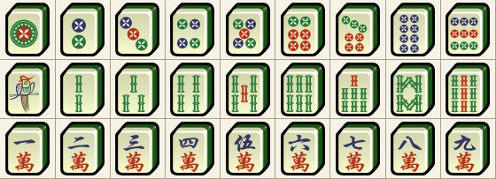
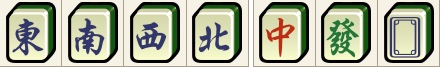
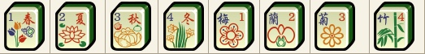

В маджонг играют фишками для маджонга, хотя есть вариант игры специальными картами для маджонга. Фишки, они же кости или тайлы, — обычно акриловые прямоугольные параллелепипеды ненамного больше ногтя человека. Как и у обычных игральных карт, у фишек есть лицевая сторона с их значением и одинаковая для всех фишек задняя сторона
Фишки бывают трёх разновидностей: обычные, мажоры и картинки
Обычные фишки бывают трёх мастей и от одного до девяти номиналов. Масти такие: точки, бамбуки и цифры. В игре четыре одинаковых копий каждой такой фишки. Итого: сто восемь обычных фишек
Точки нередко называют "дотами" и "камнями", реже "монетками", "кружочками" и "шариками". Бамбуки также известны, как "палки"; на бамбуках первого номинала обычно нарисована птица, павлин или попугай, вместо бамбука. Цифры ещё называют "числами" и "симвоалми", на них всегда нарисованы китайские иероглифы чисел, иногда добавляют число номинала
Есть два вида мажоров: ветры и драконы. Ветры бывают восточным, южным, западным и северным. Драконы бывают красным, зелёным и белым. На фишках белого дракона обычно нарисована синяя или черная рамочка, а иногда они бывают полностью белыми. Мажоры не имеют номиналов. Так же, как с обычными фишками, в игре участвуют четыре одинаковых копий мажоров. Итого: двадцать восемь фишек мажоров
Мажоры ещё называют "козырями" и "благородными костями"
Картинки, они же "джокеры" или "бонусные кости", бывают в виде четырёх времён года (начиная с весны) и четырёх цветов (обычно абрикос, орхидея, хризантема и бамбук, который не имеет отношения к обычным бамбуковым фишкам). В отличие от мажоров и обычных фишек в игре есть только по одной картинке каждого типа.
Обычно нет нужды запоминать название и рисунок каждой картинки, потому что имеет значение только их номер, который соответсвует сторонам света, а они, свою очередь, назначаются для всех игроков в начале каждого кона игры. Так, первые картинки (весна и абрикос) — это картинки игрока, который сидит на Востоке, вторые картинки (лето и орхидея) — южного игрока, третьи (осень и хризантема) — западного, а четвёртые (зима и бамбук) — северного
Восточный игрок, он же дилер или лидер, выбирается разными способами. Можно бросить игральные кости: тот, кто бросил больше всех очков — на Востоке, тот, кто бросил второе самое большое количество очков — на Юге и т.д. Можно взять четыре фишки каждого из ветров и дать каждому игроку вслепую выбрать сторону. Каждый игрок садится по очереди "вращения" солнца, но так, что мы смотрим не сверху на стол, а со стола на игроков, и таким образом "рисуем" карту: Восток — дилер, справа от него сидит южный игрок, напротив — Запад, а слева — Север. Игра традиционно проходит против часовой стрелки.
Матч состоит четырёх